Pyplot & Basic Plotting
Master the Pyplot State Machine: Learn How to Construct, Style, Compare Multiple Data Series, and Export Production-Ready Visualizations with Python
🚀 01. Section A: Understanding pyplot
Suppose kijiye aapke paas pure week ka daily study-hours data hai: [2.0, 3.5, 1.5, 4.0, 3.0, 5.5, 4.5]. Sirf in numbers ko dekh kar yeh judge karna mushkil hota hai ki kis din padhai drop hui aur weekend par kitna boost aaya. Lekin jaise hi aap in numbers ko ek line plot mein convert kar dete hain, weekly rhythm aur consistency sirf ek second mein clear ho jaati hai!
pyplot Kya Hai aur Ise plt Kyun Kehte Hain?
matplotlib.pyplot Matplotlib library ka sabse popular sub-module hai. Yeh ek State-Machine Interface provide karta hai jo MATLAB software ke visual syntax se inspired hai. Iska matlab hai ki jab bhi aap koi plotting function call karte hain, Matplotlib internally track karta hai ki "current figure" aur "current axes" kaunsi hain, aur saare updates usi canvas par apply karta hai.
Python community mein standard convention hai:
Yahan plt ek standard alias (short name) hai taaki aapko har line par lamba matplotlib.pyplot.plot() na likhna pade.
The Standard Pyplot Execution Pipeline
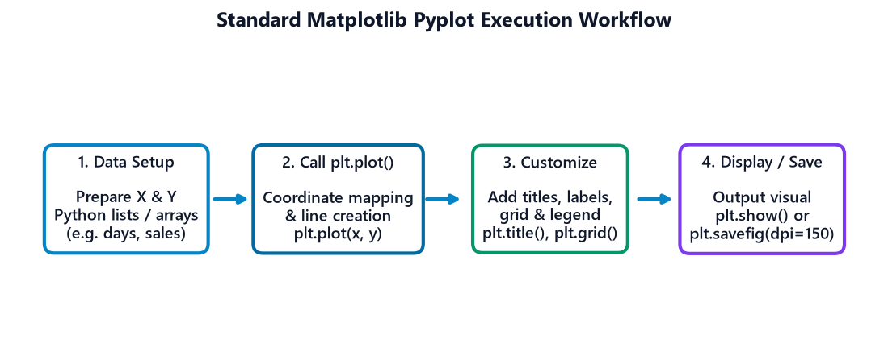
Figure 2.1: The 4-step Pyplot execution workflow: Data → Plot → Customize → Display/Save
| Step | Workflow Stage | Associated Functions | Explanation (In Simple Hinglish) |
|---|---|---|---|
| 1 | Data Preparation | Python lists, NumPy arrays | X aur Y coordinates ke numbers prepare karna. |
| 2 | Draw Points / Lines | plt.plot(x, y) |
Points ko 2D canvas par map karke line se connect karna. |
| 3 | Customization | plt.title(), plt.xlabel(), plt.grid() |
Graph ko labels, units, colors aur legends dena. |
| 4 | Output Delivery | plt.show() / plt.savefig() |
GUI window open karna ya file ko disk par save karna. |
Example 1: Student Daily Study Hours Tracker
Ek student ne pure week (Monday se Sunday) tak ke daily study hours record kiye. Chaliye iska pehla clean pyplot graph banate hain:
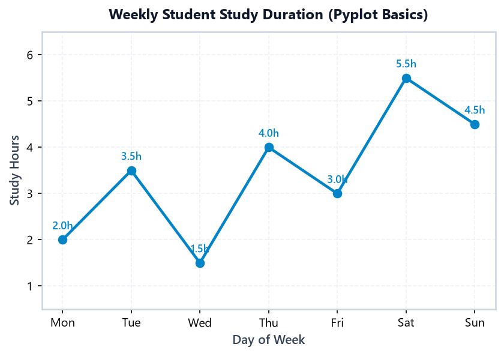
Figure 2.2: Weekly study hours line plot created using standard pyplot interface
Insight: Wednesday (1.5h) sabse low productivity day raha, jabki Saturday (5.5h) par peak concentration achieve hui. Circle markers har din ke specific point ko distinct dikhate hain.
Example 2: IoT Climate Sensor 24-Hour Cycle
Ek smart room mein laga IoT temperature sensor har 2 ghante baad temperature readings log karta hai. Hum 24 hours ka cycle plot karenge:
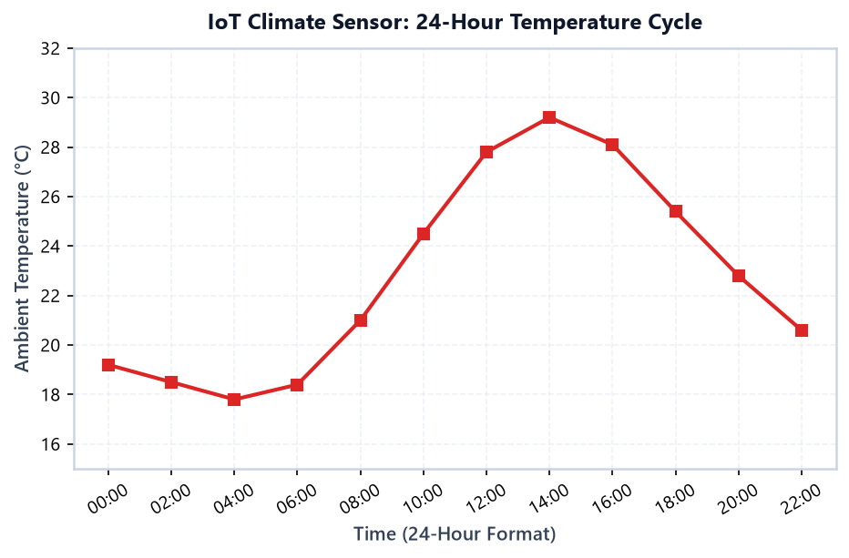
Figure 2.3: 24-hour diurnal ambient temperature curve with square markers
Insight: Subah 04:00 baje temperature minimum 17.8°C touch karta hai aur dopahar 14:00 baje maximum 29.2°C reach karta hai. X-ticks ko 30-degree rotate karne se time labels aapas mein overlap nahi hote.
📈 02. Section B: The plt.plot() Function Deep-Dive
plt.plot() Matplotlib ka universal 2D line-drawing workhorse hai. Lekin is function ke behavior ko deeply samajhna zaroori hai:
Case 1: Explicit Coordinates — plt.plot(x, y)
Jab aap do lists provide karte hain (x aur y), Matplotlib pehle point ko (x[0], y[0]) par map karta hai, doosre ko (x[1], y[1]) par, aur consecutive points ko straight lines se link kar deta hai.
len(x) aur len(y) hamesha exactly equal hone chahiye. Agar X mein 5 elements hain aur Y mein 6 elements, toh Matplotlib crash kar dega: ValueError: x and y must have same first dimension.
Case 2: Implicit Index Mapping — plt.plot(y)
Agar aap plt.plot() mein sirf ek single list pass karte hain (e.g. plt.plot([10, 25, 18, 30])), toh Matplotlib unhe automatic Y-values consider karta hai, aur X-values ke liye Python ke default index positions [0, 1, 2, 3] auto-assign kar deta hai!
Example 3: Monthly Pocket Money Savings (Explicit X and Y)
College student ke 6 months ke savings balance ko plot karte hain:
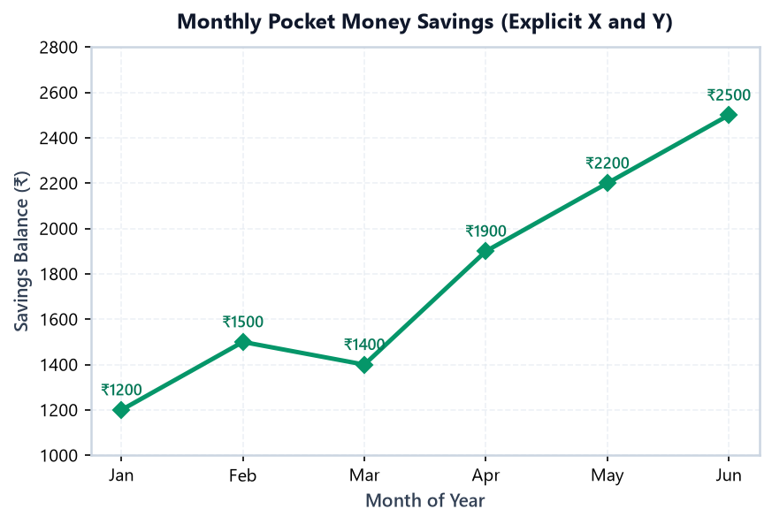
Figure 2.4: Monthly savings growth plotted with diamond markers
Example 4: Weekly Website Traffic Volume
Ek education blog par Monday se Sunday tak ke visitors count ko analyze karte hain:
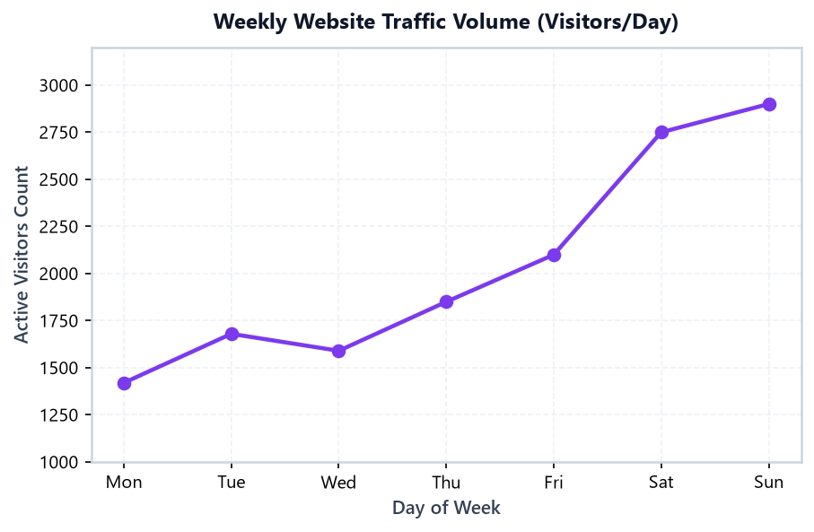
Figure 2.5: Website traffic progression highlighting weekend surge
Traffic Pattern: Monday se Friday tak traffic steadily badhta hai (1420 → 2100), lekin Saturday aur Sunday ko steep spike (2750 → 2900) aata hai kyunki students weekend par courses revise karte hain.
📊 03. Section C: Plotting Multiple Lines on the Same Graph
Ek single graph par do ya do se zyada data series ko compare karna data visualization ka core use case hai. Pyplot mein yeh super simple hai: Aap jitni baar plt.plot() call karenge, Matplotlib un lines ko usi active canvas par draw karta jayega!
Multiple Lines Rules
- Common X-Axis: Dono lines ke X-values consistent hone chahiye (e.g. same months ya same days).
labelArgument: Har line ko ek uniquelabel="Series Name"zaroor dijiye taaki legend box auto-generate ho sake.- Visual Distinction: Dono lines ko alag colors aur alag line-styles (e.g. Solid vs Dashed) dijiye taaki viewers bina confusion compare kar sakein.
Example 5: Actual Sales vs Sales Target
Company ke monthly sales revenue aur pre-decided quota target ko ek hi chart par plot karte hain:
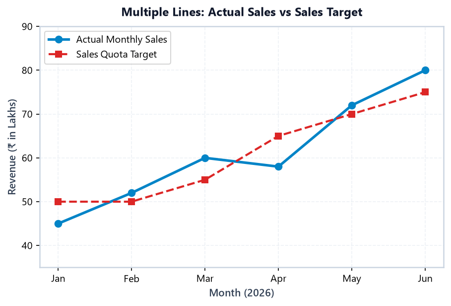
Figure 2.6: Dual series comparison showing actual sales exceeding quota targets in late Q2
Example 6: Study Hours for Two Students (Rahul vs Priya)
Do students ke weekly study habit ko compare karte hain:
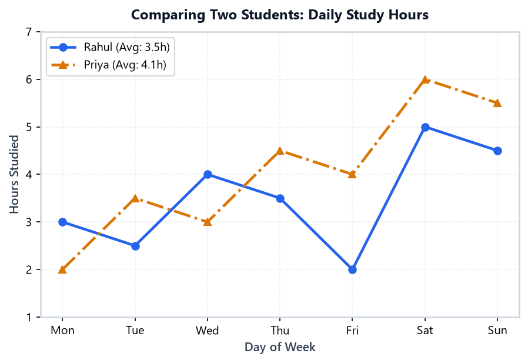
Figure 2.7: Comparative study duration highlighting distinct study patterns
Insight: Priya pure week consistently Rahul se zyada hours dedicate kar rahi hai (weekly average 4.1h vs 3.5h). Dash-dot line pattern Priya ke series ko color blindness ke bawajood Rahul ki solid line se easily distinguishable banata hai.
🎨 04. Section D: Colours, Markers, and Line Styles
Professional visual communication mein styling ka role decoration nahi, balki clarity aur data hierarchy establish karna hota hai.
| Parameter | Common Options | Visual Effect |
|---|---|---|
color |
'#0284c7', 'crimson', 'teal' |
Line aur markers ka primary color. Hex codes give precise brand colors. |
marker |
'o' (circle), 's' (square), '^' (triangle), 'D' (diamond) |
Individual observation points ko highlight karta hai. |
linestyle |
'-' (solid), '--' (dashed), ':' (dotted), '-.' (dash-dot) |
Line ka texture style change karta hai. |
linewidth |
1.5, 2.0, 2.8 |
Thicker lines indicate primary focus; thinner lines indicate background reference. |
alpha |
0.0 to 1.0 |
Opacity / Transparency control. Ideal for dense or overlapping comparisons. |
Example 7: Multi-Subject Progression Using Custom Markers & Styles
Aman ke 3 engineering subjects ke scores ko across 5 semesters track karte hain:
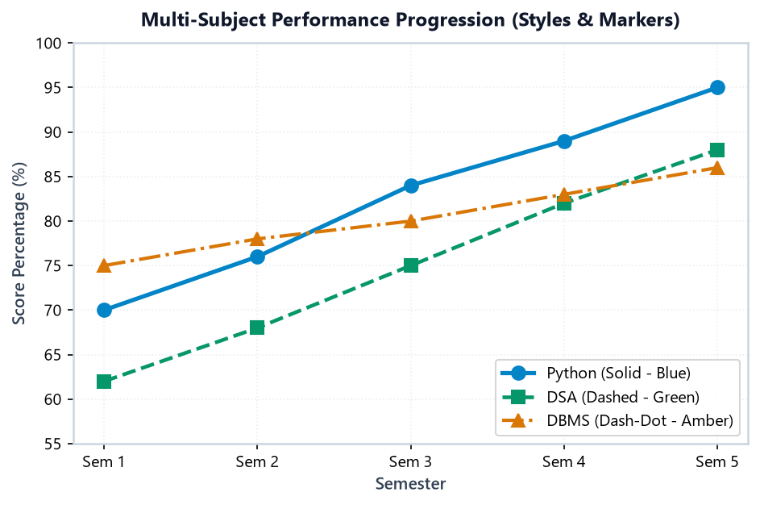
Figure 2.8: Professional styling combining distinct markers, line patterns, and accessible colors
Example 8: Industrial Boiler Heat Sensor Telemetry with Thresholds
Ek manufacturing plant mein boiler ke temperature monitoring system ko plot karte hain with warning and hazard limits:
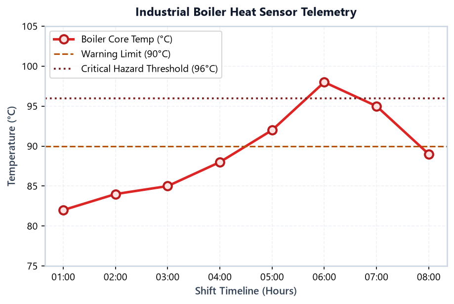
Figure 2.9: Sensor telemetry with two threshold lines showing critical hazard breach at 06:00
Safety Insight: Hour 06:00 par temperature 98°C tak surge kar gaya jo critical limit (96°C) se upar hai. markerfacecolor='#fee2e2' aur markeredgewidth=2 observation points ko visually pop-out karte hain.
👁️ 05. Section E: Titles, Axis Labels, Legends, and Grids
Bina labels ke ek chart sirf ek meaningless colorful scribble hota hai. Viewer ko code nahi dekhna padna chahiye; chart ko self-explanatory hona chahiye.
Example 9: College Subject Marks with Data Labels
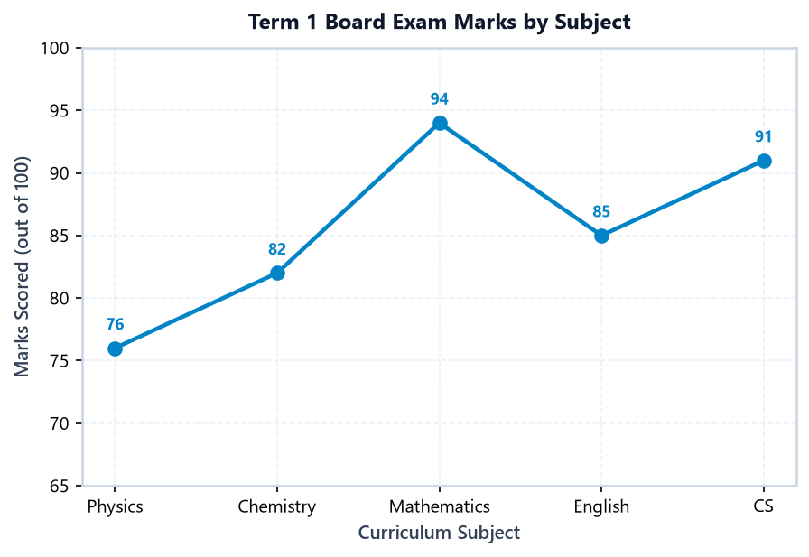
Figure 2.10: Subject score profile with explicit axis units and clear titles
Example 10: H1 Fiscal Performance with Full Annotations
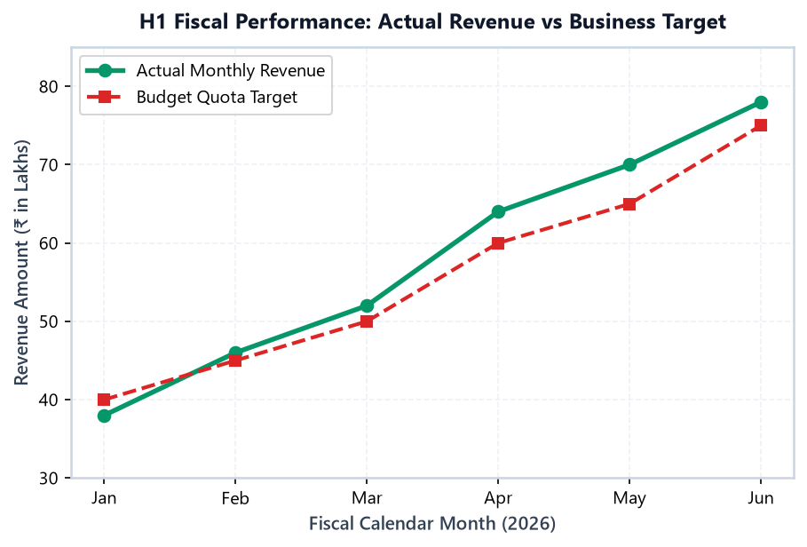
Figure 2.11: Fully customized business visual with clear unit declaration and legend alignment
🔧 06. Section F: Figure Size, Axis Limits, and Tick Labels
Default Matplotlib figure size (6.4, 4.8) aksar labels ko cramp kar deta hai. In functions ke through hum layout ko fine-tune karte hain:
plt.figure(figsize=(width, height)): Inches mein total canvas geometry control karta hai.plt.xlim(min, max)/plt.ylim(min, max): Data bounding ranges enforce karta hai.plt.xticks(rotation=45, ha='right'): Long category names ko diagonal rotate karke overlapping se protect karta hai.
Example 11: Rotated Month Ticks & Customized Range
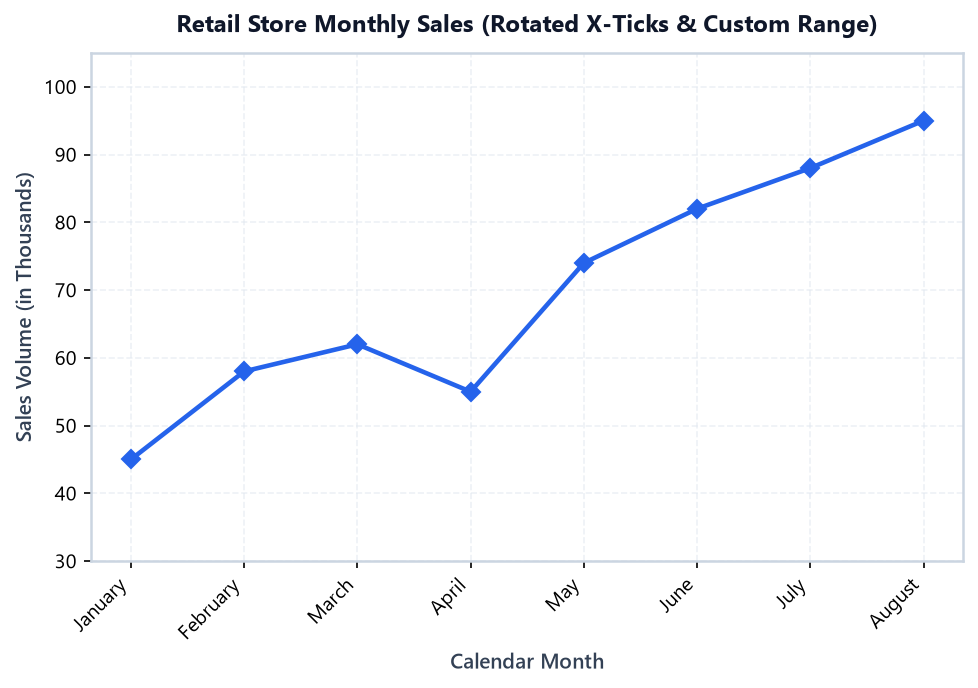
Figure 2.12: Expanded figure width with 45° angled X-axis tick labels
Example 12: Honest vs Misleading Axis Limits Side-by-Side Audit
Dhyan se dekhiye: Dono charts mein exact same quarterly revenue data [102, 104, 103, 105] plot kiya gaya hai:
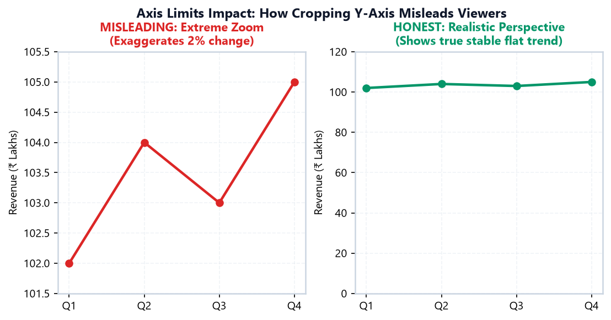
Figure 2.13: Visual proof: Truncating the Y-axis turns a 2% normal fluctuation into an alarming rollercoaster
Rule of Thumb: Data analyst ka kaam truth communicate karna hai, drama create karna nahi! Hamesha dekhein ki aapke axis limits real business scale ko truthfully represent kar rahe hon.
💾 07. Section G: Displaying and Saving Plots
Scripts mein plot ko file format (PNG, SVG, PDF) mein save karne ke liye plt.savefig() use hota hai.
Never do this: plt.show() followed by plt.savefig('my_chart.png')! Window close hone par figure memory se flush ho jaata hai aur saved image bilkul blank nikalti hai. Hamesha save call pehle karein!
Example 13: Save Study Hours with Programmatic Verification
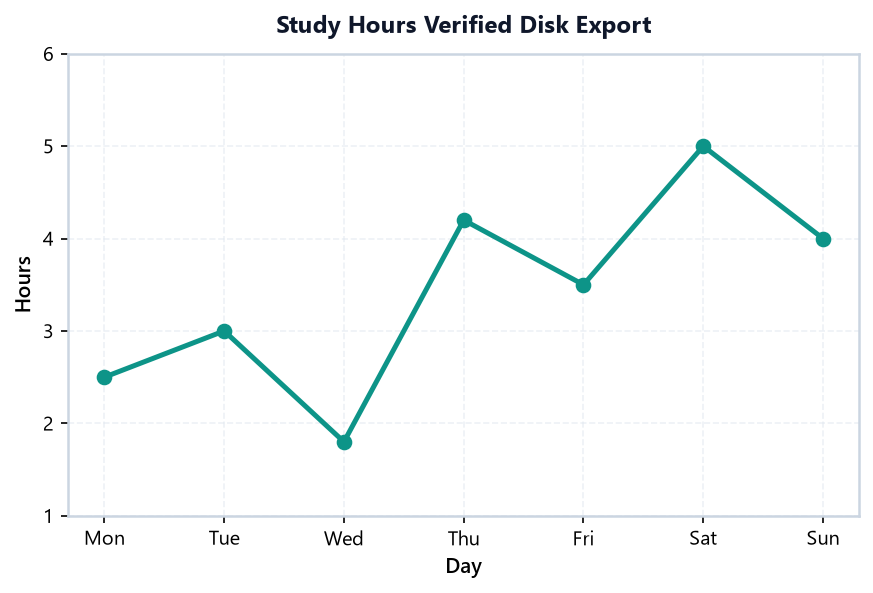
Figure 2.14: Saved study hours visual with programmatic disk-size verification
Example 14: Save Sales Graph with Tight Bounding Box
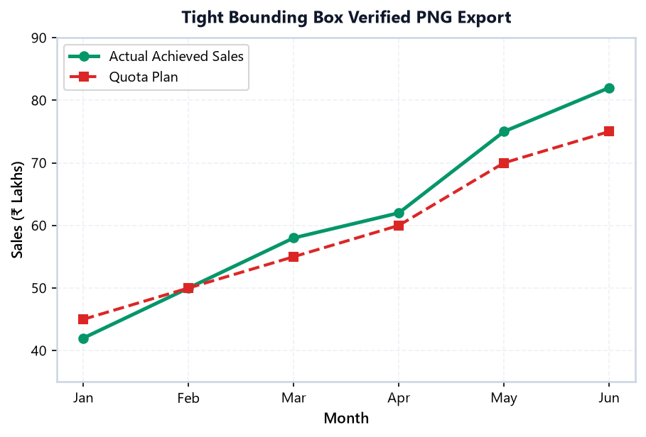
Figure 2.15: Dual-series sales visual saved with zero label clipping
🚧 08. Section H: Common Beginner Mistakes & Fixes
In 12 common mistakes ko pehle se samajh lene se aapka runtime debugging time 80% reduce ho jayega:
1. Length Mismatch between X and Y Arrays
Cause: plt.plot([1, 2, 3], [10, 20]) raises ValueError: x and y must have same first dimension.
Fix: Hamesha verify karein ki len(x) == len(y).
2. Forgetting plt.show() in Standalone Python Scripts
Jupyter cells auto-display karte hain, lekin .py scripts terminal se run karte waqt bina plt.show() ke screen par koi graph appear nahi hota.
3. plt.savefig() Call After plt.show()
plt.show() canvas clear kar deta hai. Agar uske baad save karenge toh saved file 0 bytes ya pure white canvas aayegi. Always save first!
4. Plotting Multiple Series Without label= and plt.legend()
Agar do lines plot ki hain lekin label nahi diya, toh viewer ko nahi pata chalega ki Red line kya hai aur Blue line kya hai.
5. Overlapping & Unreadable X-Axis Labels
Jab dates ya category names lambe hote hain, text ek doosre ke upar chadh jaata hai. Fix: plt.xticks(rotation=45, ha='right') use karein.
6. Using Unsorted X-Values for a Continuous Trend
Agar X list [3, 1, 5, 2] random order mein ho, toh line aage-peeche zigzag criss-cross ban jaayegi! Hamesha X sequence ko sort karein.
7. Confusing Marker Shape with Line Style
marker='--' error dega kyunki '--' line style hai. Markers single character hote hain: 'o', 's', '^', 'D'.
8. Misleading Truncated Y-Axis
Zooming from 99.8 to 100.2 makes a 0.4% change look like an earthquake. Keep realistic bounds to communicate genuine perspective.
9. Missing Units on Axis Labels
Y-label par sirf "Revenue" likhna ambiguous hai. Hamesha specify karein: "Revenue (₹ Lakhs)" ya "Revenue ($ Millions)".
10. Forgetting bbox_inches="tight" During Save
Saved PNG mein outer title ya rotated X-ticks cut off ho jaate hain agar tight bounding box enable na kiya ho.
11. Connecting Completely Unrelated Categorical Data
Car models (BMW, Audi, Mercedes) ke beech line plot connect karna meaningless hai. Categorical comparisons ke liye bar charts use karein.
12. Hardcoding Local File Paths into Web Deliverables
Local Windows desktop paths remote servers ya mobile devices par 404 de dete hain. Use relative project asset paths (assets/chart.png).
💼 09. Section I: Real-Life Mini Projects
Mini Project 1: College Study Schedule Tracker
Goal: Ek student ke 7-day study schedule ko daily target benchmark (3.5 hours) ke against visual audit karna.
Stage 1: Data Preparation & Goal Variance Check
Stage 2: Annotated Visual Dashboard with Benchmark Line
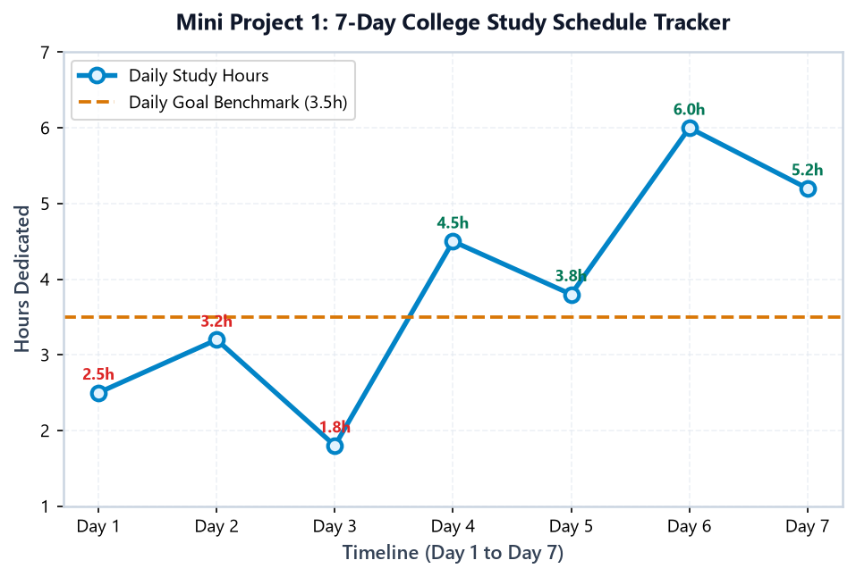
Figure 2.16: Study schedule tracker highlighting green (target achieved) and red (target missed) annotations
Mini Project 2: E-Commerce H1 Sales Revenue Audit
Goal: Q1-Q2 (H1) retail revenue ko pre-approved budget targets ke against audit karna aur surplus/deficit zones visualize karna.
Stage 1: Variance Audit Computation
Stage 2: Comparative Multi-Line Plot with Shaded Regions
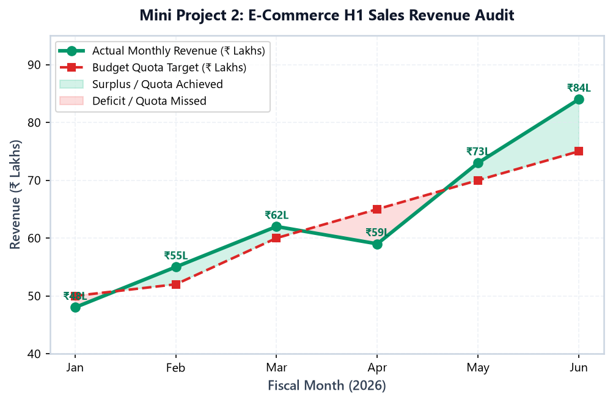
Figure 2.17: Complete H1 revenue audit with green surplus shading and red deficit shading
Executive Finding: Company ne January (-₹2L) aur April (-₹6L) mein budget miss kiya, lekin February, March, May aur June mein strong quota beat kiya. Total H1 Net Surplus +₹9 Lakhs raha, resulting in an overall healthy fiscal half.
🏆 10. Section J: Mini Challenge & Solution
🤔 The Student Challenge
Do different product lines (Line Alpha aur Line Beta) ke 4 quarters ka units-sold performance compare kijiye:
- Data:
quarters = ["Q1", "Q2", "Q3", "Q4"],prod_a = [35, 42, 48, 55],prod_b = [28, 38, 45, 52]. - Line Alpha ko Blue solid line (
'#0284c7') aur circle marker'o'dijiye. - Line Beta ko Amber dashed line (
'#f59e0b') aur square marker's'dijiye. - Title dijiye:
"Mini Challenge: 4-Quarter Multi-Product Sales Comparison". - X-Axis label:
"Fiscal Quarter", Y-Axis label:"Units Sold (in Thousands)". - Subtle grid lines enable kijiye aur legend ko
'upper left'par place karein. - File ko
assets/topic02_challenge_solution.pngke naam sebbox_inches='tight'save kijiye.
👀 Click Here to Reveal Verified Solution Code
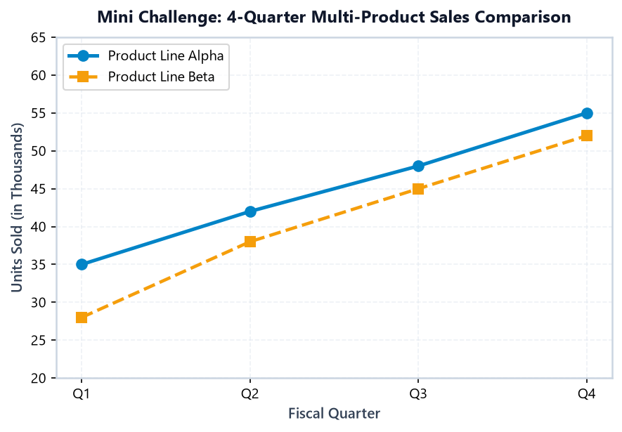
Figure 2.18: Verified student challenge output chart
📚 11. Section K: Essential Terms & Checklist
| Term | Definition (In Simple Hinglish) |
|---|---|
| State-Machine Interface | Pyplot ka internal mechanism jo automatically current active figure aur active axes track karta hai. |
plt.plot(x, y) |
Points ko coordinate plane par map karke straight line segments se connect karta hai. |
| Legend | Multiple lines ya bars ko identify karne ka guide box jo label= parameter se populate hota hai. |
| Markers | Exact data observation points par banaye jaane wale symbols (circle, square, diamond, triangle). |
figsize=(w, h) |
Inches mein overall canvas ka physical aspect ratio aur size control karta hai. |
plt.savefig() |
Visual ko standalone image file (PNG, SVG) ke roop mein disk par permanent store karta hai. |
✅ 5-Step Chart Readability Checklist
- ☑ Descriptive Title: Kya title data ka main takeaway declare karta hai?
- ☑ Labeled Axes with Units: Kya dono axes clearly labeled hain along with units (₹, %, Hours)?
- ☑ Distinct Line Styles: Agar multiple series hain, toh kya unhe alag colors aur markers diye gaye hain?
- ☑ Honest Axis Limits: Kya axis range data variation ko unnaturally distort toh nahi kar rahi?
- ☑ Pre-Show Saving: Kya
plt.savefig()koplt.show()se pehlebbox_inches="tight"ke saath call kiya gaya hai?
Aapne Pyplot interface se basic plotting seamlessly master kar li hai! Agle topic — Topic 3: Figures, Axes & Plot Structure — mein hum Object-Oriented approach (fig, ax = plt.subplots()), multi-axes layouts, aur subplots ke deep internal architecture ko step-by-step conquer karenge!